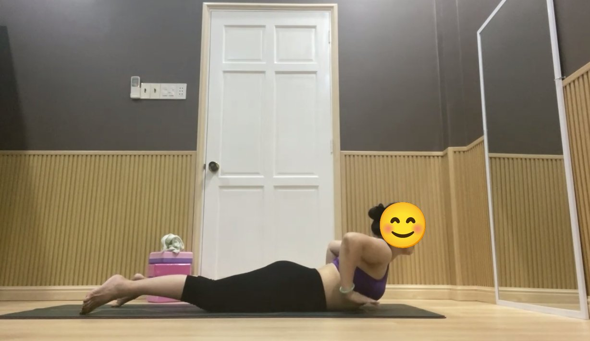

Yoga người lớn · Sức khỏe nam giới
Ứng dụng yoga cân bằng phục hồi cho sức khỏe sinh lý nam giới
Chuyện này đàn ông ít khi nói ra. Không nói với bạn, ngại nói với vợ, càng ngại nói với bác sĩ. Họ lặng lẽ tìm trên mạng, mua thử một lọ thuốc bổ, rồi im lặng tiếp.
Anh đến lớp kèm riêng với lý do “đau lưng”. Bốn mươi hai tuổi, làm kinh doanh, tối nào cũng tiếp khách. Ngủ năm tiếng. Bụng đã ra khỏi thắt lưng.
Đến buổi thứ ba, khi đang nằm thư giãn cuối giờ, anh hỏi bâng quơ: “Cô ơi, yoga có giúp được chuyện… ấy không?”
Cô không cười, cũng không ngạc nhiên. Cô hỏi anh một câu khác: “Anh đi khám tim mạch, đo đường huyết lần gần nhất là khi nào?”
Anh im một lúc. “Chắc năm năm rồi cô ạ.”
Câu chuyện được kể lại từ nhiều học viên có cùng vấn đề, đã đổi chi tiết để giữ riêng tư.
Sức khỏe sinh lý của nam giới, gồm ham muốn, khả năng cương và sự bền bỉ, không phải chuyện riêng của một bộ phận. Nó là tấm gương phản chiếu toàn bộ cơ thể: mạch máu, nội tiết, thần kinh, giấc ngủ, cảm xúc. Vì vậy Sophia không tin vào một tư thế “tăng sinh lực” nào cả. Điều cô tin là khi cả cơ thể được cân bằng trở lại, chức năng ấy cũng có cơ hội hồi phục theo.

- Một tín hiệu sớm
- Điều gì lấy đi sức nam
- Thử tự soi
- Ba gốc
- Năm thể
- Hơi thở và thần kinh
- Sáu tư thế
- Chuỗi 15 phút
- Đổi lối sống
- Tám bậc yoga
- Khi nào đi khám
Một tín hiệu sớm của trái tim
Sự cương cứng về cơ bản là chuyện mạch máu: máu chảy vào đầy đủ và được giữ lại. Các động mạch nuôi vùng này rất nhỏ, chỉ khoảng một đến hai milimét. Động mạch nuôi tim lớn hơn, khoảng ba đến bốn milimét. Khi thành mạch bắt đầu xơ vữa, mạch nhỏ “lên tiếng” trước.
Mạch càng nhỏ, càng sớm báo động
Ý tưởng “kích thước động mạch” của các bác sĩ Montorsi ở Ý (2003, 2005). Hình minh họa, không theo tỉ lệ thật.
Ở Ý, bác sĩ Montorsi và cộng sự hỏi những người bệnh mạch vành: trước khi đau ngực, họ có gặp trục trặc chuyện cương không? Rất nhiều người trả lời có, và trục trặc ấy đến trước trung bình khoảng ba năm (Montorsi và cộng sự, European Urology 2003). Một nghiên cứu lớn ở Mỹ theo dõi hơn bốn nghìn nam giới cũng thấy người có rối loạn cương dễ gặp biến cố tim mạch hơn về sau (Thompson và cộng sự, JAMA 2005).
Cô kể điều này không phải để làm ai sợ. Mà để thấy: đây là cơ hội. Cơ thể đang nhắn một lời sớm. Nghe được lời nhắn ấy, mình có cả vài năm để chăm lại mạch máu, tim, đường huyết, cái bụng.
Điều gì đang lấy đi sức nam
🍺
Rượu bia
Một chút có thể làm bớt ngại, nhưng uống nhiều làm giảm phản xạ thần kinh, giảm testosterone theo thời gian.
🚬
Thuốc lá
Làm hẹp và cứng mạch máu, đúng những mạch nhỏ nhất.
🫃
Mỡ bụng
Mô mỡ chuyển một phần testosterone thành estrogen. Bụng càng to, nội tiết càng lệch.
🌙
Thiếu ngủ
Testosterone được tiết nhiều nhất khi ngủ. Ngủ năm tiếng một tuần đã làm nó giảm rõ.
😣
Căng thẳng
Hệ thần kinh “chiến đấu, bỏ chạy” bật suốt ngày. Mà cương cứng lại cần hệ “nghỉ ngơi” làm chủ.
🪑
Ngồi nhiều
Ít vận động, vùng chậu ít được nuôi máu. Đường huyết, mỡ máu tăng dần.
Còn một vòng luẩn quẩn nữa. Một lần “không được”, lần sau lo. Lo thì hệ thần kinh căng, càng khó. Càng khó càng lo. Rất nhiều anh mắc kẹt trong vòng này dù mạch máu vẫn còn tốt.
Thử tự soi thói quen của mình
Tuần vừa rồi của mình
Ba gốc của yoga cân bằng phục hồi
- 🌬️Hơi thở là gốc. Thở chậm, thở ra dài là cách trực tiếp nhất để chuyển hệ thần kinh từ căng sang nghỉ. Không có hệ nghỉ ngơi làm chủ, mạch máu khó mà giãn ra.
- 🌿Cột sống là trọng tâm. Thần kinh điều khiển vùng chậu đi ra từ phần cuối cột sống. Lưng thẳng, hông linh hoạt, vùng chậu được nuôi máu tốt hơn.
- ⚖️Cân bằng là hướng đi. Không chạy theo “sung mãn”, không so với ai. Tìm lại thế cân giữa làm và nghỉ, giữa ham muốn và điều độ.
Sức nam trên cả năm thể
Yoga nhìn con người qua năm lớp (bài Năm thể của con người kể kỹ hơn).
Thân
Mạch máu, nội tiết, cơ sàn chậu, cân nặng, đường huyết.
Khí
Hơi thở nông, gấp, nín thở khi lo. Năng lượng cạn vào cuối ngày.
Tâm
Lo lắng, sợ thất bại, xấu hổ. Căng thẳng trong công việc mang về giường.
Trí
So sánh với phim ảnh, với lời bạn bè. Nghĩ “đàn ông là phải…”.
Tinh thần
Sự gần gũi bị thu lại thành một “nhiệm vụ”. Quên rằng nó là sự kết nối giữa hai người.
Cô thấy nhiều anh chỉ chăm vào lớp thân, uống thuốc bổ, tìm món ăn “tốt cho đàn ông”. Trong khi phần nặng nhất lại nằm ở tâm và trí.
Hơi thở và hệ thần kinh
Cơ thể có hai chế độ. Chế độ “chiến đấu” giúp mình làm việc, đối phó áp lực. Chế độ “nghỉ ngơi và tiêu hóa” giúp mình hồi phục, ngủ, tiêu hóa, và cả sự cương cứng. Hai chế độ thay nhau như hai bên của cái cân. Người đàn ông hiện đại sống gần như cả ngày ở chế độ đầu.
Thở ra dài hơn hít vào là một tín hiệu đơn giản nhắn cho hệ thần kinh: an toàn rồi, có thể nghỉ. Thử ba phút dưới đây, ngồi hay nằm đều được.
Thở chậm làm dịu cơ thể. Tổng quan về thở chậm khoảng sáu nhịp mỗi phút cho thấy cách thở này gắn với hoạt động phó giao cảm (chế độ nghỉ ngơi) tăng lên và cảm giác thư thái hơn (Zaccaro và cộng sự, Frontiers in Human Neuroscience 2018).
Sáu tư thế đơn giản, đúng chỗ
Cô chọn những tư thế giúp vùng chậu và hông linh hoạt, sàn chậu biết co biết thả, cột sống dài ra, và hệ thần kinh được nghỉ. Không cần tư thế khó.
Siết nhẹ, thả hết
Tập sàn chậu 3 phút
Thở ra, siết nhẹ cơ như đang nhịn tiểu giữa chừng và nhấc gốc dương vật lên trong, khoảng ba phần sức. Hít vào, thả hoàn toàn. Không nín thở, không siết mông.
Cây cầu thấp
Setu Bandhasana nhẹ 2 phút
Nằm ngửa co gối. Thở ra nâng hông, hít vào hạ xuống. Mông, đùi sau và sàn chậu cùng làm việc.
Chiến binh thấp
Anjaneyasana 2 phút
Quỳ một gối, chân kia bước lên trước. Hông đẩy nhẹ về trước để mở cơ gập hông, chỗ hay bị co rút vì ngồi nhiều.
Con bướm
Baddha Konasana 2 phút
Ngồi trên gối, hai lòng bàn chân chạm nhau, lưng dài. Không ấn gối. Thở vào vùng chậu.
Rắn hổ mang nhẹ
Bhujangasana thấp 1 phút
Nằm sấp, nâng ngực thật nhẹ, khuỷu tay vẫn cong. Mở ngực, mở bụng, ngược lại với dáng ngồi khom cả ngày.
Nằm thư giãn
Savasana 5 phút
Nằm ngửa, kê gối dưới đầu gối. Không làm gì. Đây là tư thế “khó” nhất với người đàn ông bận rộn.
Tập sàn chậu cho nam giới. Ở Anh, 55 nam giới có rối loạn cương tập sàn chậu đều đặn có hướng dẫn. Sau sáu tháng, khoảng bốn mươi phần trăm lấy lại chức năng bình thường và thêm một phần ba cải thiện (Dorey và cộng sự, BJU International 2005).
Cô hay để ý mấy điều. Cô không cho siết sàn chậu thật mạnh, thật lâu, vì sàn chậu căng quá cũng gây đau và rối loạn. Ai đang đau vùng chậu, đau tinh hoàn, đau khi xuất tinh thì đi khám trước, có khi cần học thả lỏng chứ không phải siết. Không nín thở, không rặn trong mọi tư thế.


Chuỗi 15 phút buổi tối
Tập sau bữa tối khoảng một tiếng, trước giờ ngủ. Bấm bắt đầu, nghe tiếng chuông nhỏ thì đổi bước.
Từ căng sang nghỉ
- Thở ra dài Ngồi thẳng, hít vào bốn nhịp, thở ra bảy nhịp.
- Siết nhẹ, thả hết Thở ra siết sàn chậu ba phần sức, hít vào thả hoàn toàn.
- Mèo bò Quỳ bốn điểm, xương chậu chuyển động theo hơi thở.
- Chiến binh thấp bên phải Hông đẩy nhẹ về trước, thở vào bụng.
- Chiến binh thấp bên trái Đổi bên.
- Cây cầu thấp Thở ra nâng hông, hít vào hạ từng đốt sống.
- Con bướm Ngồi trên gối, gối thả tự nhiên.
- Nằm thư giãn Kê gối dưới đầu gối. Thả từng phần cơ thể từ chân lên đầu.
Đổi lối sống: phần lớn của việc phục hồi
Lối sống có thể làm thay đổi. Ở Ý, 110 nam giới béo phì có rối loạn cương được chia hai nhóm. Nhóm được hướng dẫn giảm cân, ăn uống lành mạnh, tăng vận động trong hai năm: khoảng một phần ba lấy lại chức năng bình thường, nhiều hơn hẳn nhóm chỉ nhận lời khuyên chung (Esposito và cộng sự, JAMA 2004).
- Giấc ngủBảy đến tám tiếng. Một nghiên cứu ở Mỹ cho thanh niên khỏe mạnh ngủ năm tiếng mỗi đêm trong một tuần, testosterone ban ngày giảm khoảng mười đến mười lăm phần trăm (Leproult và Van Cauter, JAMA 2011). Ngáy to thì đọc thêm bài ngáy, ngưng thở khi ngủ.
- Tắm nắngMười lăm phút nắng sớm mỗi ngày. Nắng giúp đồng hồ sinh học, giấc ngủ, và cơ thể tạo vitamin D.
- Vận độngĐi bộ nhanh, đạp xe, bơi, ít nhất 150 phút mỗi tuần. Tim mạch khỏe là gốc của sức nam.
- Ăn uốngNhiều rau, trái cây, đậu, hạt, cá, dầu thực vật, kiểu ăn Địa Trung Hải. Bớt đồ chiên, thịt chế biến sẵn, đồ ngọt. Bụng nhỏ lại là nội tiết bớt lệch.
- Rượu bia, thuốc láBỏ thuốc lá là việc lớn nhất có thể làm cho mạch máu. Rượu bia bớt dần. Tiếp khách thì gọi nước, gọi trà, và đó không phải là kém “đàn ông”. Bài gan nhiễm mỡ, bụng bia có công cụ tính lượng cồn.
- Chân đất, thiên nhiênCuối tuần đi bộ ở công viên, bờ hồ, đi chân trần trên cỏ. Ra khỏi bốn bức tường là hệ thần kinh tự dịu.
- Thuốc bổ, thuốc kích thíchCẩn thận với thuốc trôi nổi trên mạng. Nhiều loại “thảo dược” bị phát hiện trộn thuốc tây không ghi nhãn, nguy hiểm với người bệnh tim, người đang dùng thuốc nitrat.
- Suy nghĩBớt so sánh. Cơ thể ở tuổi bốn mươi, năm mươi khác tuổi hai mươi, và điều đó bình thường.
- Kết nốiNói chuyện với vợ, với người thương. Sự gần gũi bắt đầu từ ban ngày: một bữa cơm, một lần đi dạo, một câu hỏi han. Áp lực giảm thì cơ thể tự nhẹ.
Tám bậc yoga cho sức nam
Giới
Yama
Brahmacharya, điều độ: không phải kiêng hết, mà dùng năng lượng một cách tỉnh thức, không phung phí. Ahimsa, không làm hại: không ép mình, không dùng thuốc lạ.
Luật
Niyama
Santosha, biết đủ: bằng lòng với cơ thể mình hôm nay. Tapas, kỷ luật: đều đặn ngủ đủ, vận động, bỏ thuốc lá.
Tư thế
Asana
Hông linh hoạt, vùng chậu được nuôi máu, lưng thẳng.
Hơi thở
Pranayama
Thở ra dài để hệ nghỉ ngơi làm chủ.
Thu giác quan
Pratyahara
Bớt hình ảnh, phim ảnh kích thích quá mức. Chúng làm lệch kỳ vọng và làm mỏi hệ thần kinh.
Tập trung
Dharana
Có mặt trọn vẹn với người bên cạnh, không mang công việc theo.
Thiền
Dhyana
Mười phút mỗi ngày để tâm lắng xuống, bớt lo âu.
Hòa nhập
Samadhi
Cảm giác hòa vào, không còn “phải làm tốt”. Chỉ là có mặt.
Brahmacharya hay bị hiểu là cấm dục. Trong đời sống gia đình, nhiều thầy yoga hiểu nó là sự điều độ và tỉnh thức với năng lượng của mình: không tiêu phí vào rượu bia, thức khuya, những thứ làm cạn kiệt. Cô thấy cách hiểu này rất hợp với chuyện sức khỏe sinh lý. Giữ năng lượng không phải để kìm nén, mà để có đủ cho những gì quan trọng.
Ai muốn đọc thêm có mục Giới và luật trong yoga.
Nghiên cứu về yoga
Một nghiên cứu nhỏ ở Ấn Độ. 65 nam giới tham gia lớp yoga mười hai tuần. Điểm chức năng tình dục (ham muốn, sự hài lòng, xuất tinh, sự tự tin) đều tăng so với trước khi tập (Dhikav và cộng sự, The Journal of Sexual Medicine 2010). Nghiên cứu không có nhóm so sánh, nên chỉ là gợi ý ban đầu.
Cô muốn nói thật: bằng chứng riêng cho yoga còn ít. Phần chắc chắn hơn là những gì yoga giúp mình làm đều đặn: vận động, giảm cân, ngủ đủ, bớt căng thẳng, tập sàn chậu. Những điều ấy đã có bằng chứng tốt.
Khi nào cần đi khám
Yoga và thay đổi lối sống đi cùng, không thay cho việc khám và chăm sóc của bác sĩ. Nên đi khám nam khoa hoặc nội khoa khi:
- Trục trặc kéo dài hơn vài tháng, nhất là ở người trên bốn mươi tuổi: nên kiểm tra huyết áp, đường huyết, mỡ máu, tim mạch.
- Đau ngực, khó thở khi gắng sức, kể cả khi gần gũi. Dừng lại. Đau ngực dữ dội, vã mồ hôi thì gọi cấp cứu 115.
- Cương kéo dài trên bốn tiếng, gây đau: cần cấp cứu ngay.
- Đau tinh hoàn, có khối u, sưng ở bìu.
- Giảm ham muốn kèm mệt mỏi, buồn chán kéo dài, rụng lông, vú to lên.
- Đang dùng thuốc huyết áp, thuốc tim, thuốc trầm cảm mà thấy thay đổi: hỏi bác sĩ, không tự ngừng thuốc.
Không tự mua thuốc tăng cường. Thuốc loại này dùng cùng thuốc nitrat (thuốc tim) có thể gây tụt huyết áp nguy hiểm.
Lời nhỏ cuối bài
Anh học viên ấy đi khám. Đường huyết cao, mỡ máu cao, huyết áp chớm cao. Anh bảo may mà biết sớm. Giờ anh ngủ trước 11 giờ, bỏ thuốc lá được năm tháng, tiếp khách thì uống trà. Sáng nào cũng đi bộ cùng vợ quanh hồ.
Anh không kể nhiều. Chỉ một lần cuối buổi tập, anh nói: “Vợ em bảo dạo này em hiền hơn.”
Cô nghĩ đó là câu trả lời.
🌿 Muốn có người đi cùng trên hành trình phục hồi?
Sophia Yoga có lớp người lớn trực tiếp, lớp Zoom và lớp kèm 1 kèm 1 (500.000đ / giờ), theo hướng yoga cân bằng phục hồi: hơi thở là gốc, cột sống là trọng tâm, tập vừa sức. Mọi chia sẻ đều được giữ kín. Ai muốn mang yoga đến với các con, có khóa đào tạo HLV Yoga trẻ em.
Đọc thêm cho nam giới: tiểu đêm, tuyến tiền liệt · gan nhiễm mỡ, bụng bia · ngáy, ngưng thở khi ngủ · bệnh gút.
Tài liệu tham khảo
- Montorsi F. và cộng sự (2003). Erectile dysfunction prevalence, time of onset and association with risk factors in 300 consecutive patients with acute chest pain and angiographically documented coronary artery disease. European Urology, 44(3), 360–365.
- Montorsi P. và cộng sự (2005). The artery size hypothesis: a macrovascular link between erectile dysfunction and coronary artery disease. American Journal of Cardiology, 96(12B), 19M–23M.
- Thompson I.M. và cộng sự (2005). Erectile dysfunction and subsequent cardiovascular disease. JAMA, 294(23), 2996–3002.
- Esposito K. và cộng sự (2004). Effect of lifestyle changes on erectile dysfunction in obese men: a randomized controlled trial. JAMA, 291(24), 2978–2984.
- Dorey G. và cộng sự (2005). Pelvic floor exercises for erectile dysfunction. BJU International, 96(4), 595–597.
- Leproult R., Van Cauter E. (2011). Effect of 1 week of sleep restriction on testosterone levels in young healthy men. JAMA, 305(21), 2173–2174.
- Dhikav V. và cộng sự (2010). Yoga in male sexual functioning: a noncomparative pilot study. The Journal of Sexual Medicine, 7(10), 3460–3466.
- Zaccaro A. và cộng sự (2018). How breath-control can change your life: a systematic review on psycho-physiological correlates of slow breathing. Frontiers in Human Neuroscience, 12, 353.
- Patañjali. Yoga Sutra, chương II (Yama, Niyama, II.29–45).
Ảnh trong bài là ảnh thật từ các buổi tập của Sophia Yoga, mặt học viên đã được che. Câu chuyện là minh họa, ghép từ nhiều học viên. Bài viết chia sẻ kiến thức và kinh nghiệm tập luyện, không thay cho lời khuyên và chăm sóc của bác sĩ.